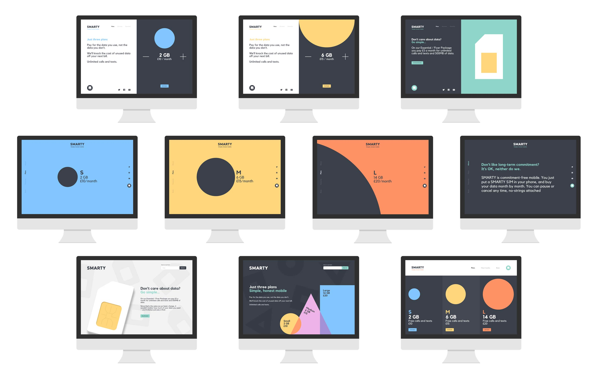
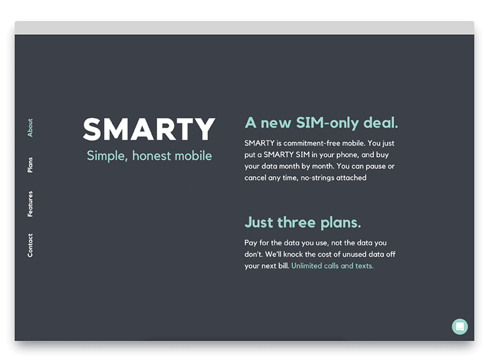
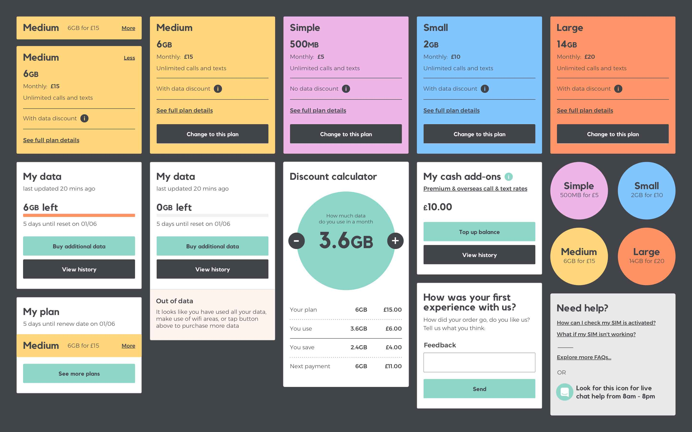
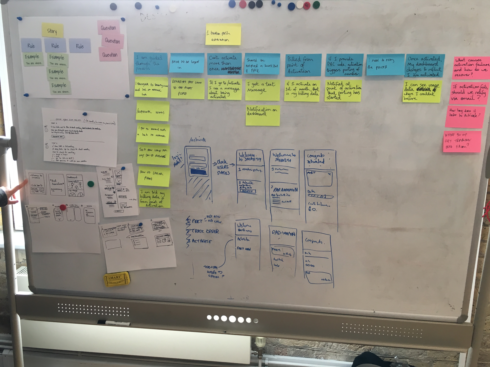
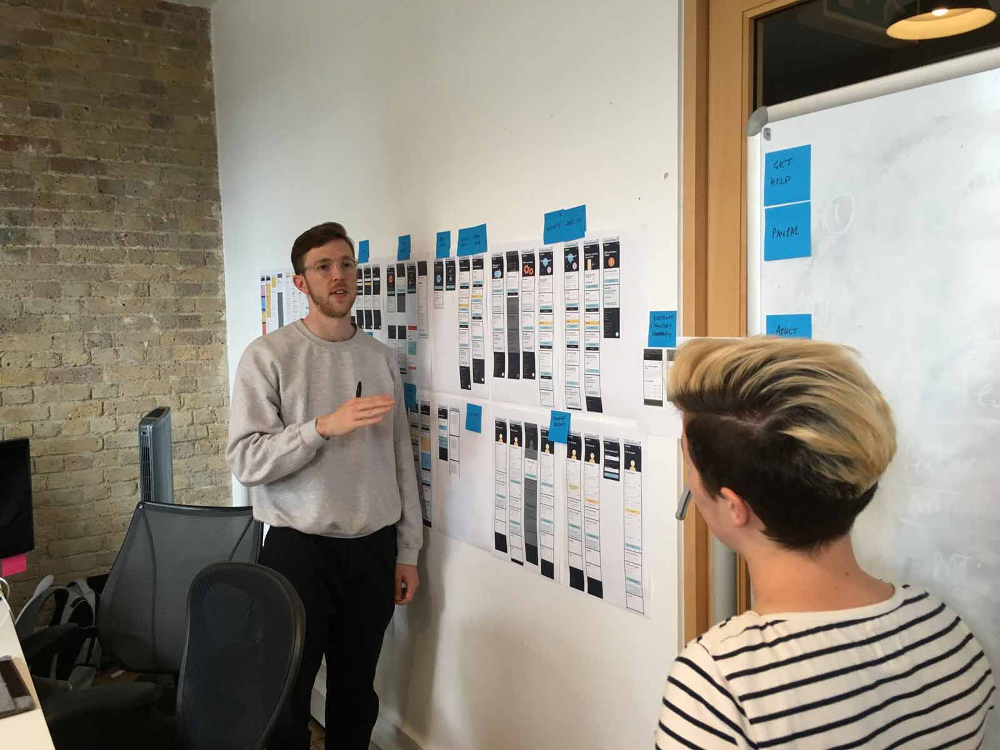
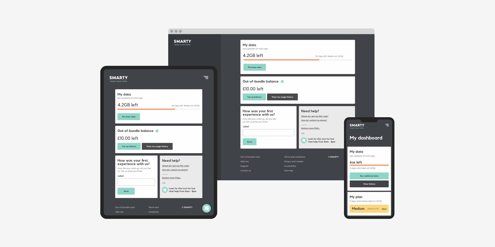

Client
Three
Role
Senior Product Designer
Link
Smarty.co.uk
Tasks
Branding, UX, UI, Design System
Three wanted to create a simple, digital-led, pay as you go telco brand to broaden their customer base. I joined the team just as the business proposition was being crafted and validated with users. My involvement was firstly to develop a digital sub-brand for this new MVNO, secondly to implement a phase one product through to launch, all in 6 months.

Brand exploration
The brand principles guiding our work were focused on simplicity and an honest tone of voice. Some work was already in place for above the line branding such as fonts, colours and circle motifs. My exploration into developing the brand for digital was based on taking these minimal elements and eliciting personality and bringing life to it through the use of motion and space and scale. As well as how to use visual language such as circles to communicate concepts such as the data plan tiers.


It's a great design challenge to have the constraint of having only colour, type and the most basic shape possible to create a brand with presence and personality, but that still embodies the tenets of simplicity and honesty.
Design system
As we shifted gear into production we began building a design system, meaning our developers could start creating the fundamental components of the interface while we crafted the user experience through cycles of prototyping and user testing.

Sundae System
Our approach was to layer the system like an ice cream sundae, the idea being that the basis of the UI (vanilla) was aimed at creating a solid foundation and the best possible user experience, accessible to everybody; things like a responsive card UI, certain patterns for forms and interactions etc. The scaffolding for the interface.
Cream
The next layer was where the branding visual language would become apparent through things like illustration, typography and colour. A benefit to having layers to the system meant that in future; branding could be applied systematically without harming the underlying solid user experience. Thus making the design system scalable to future products/brands.
Cherries on top
The final layer comprised the subtleties and nuances that can really add character and moments of delight to the experience. These are the totally custom and bespoke elements of emotional design that shape a customers lasting positive impressions of a service such as nice animation or fun interaction.


Building the system
Working with the developers we defined a set of core, reusable components for the Vanilla layer, the baseline components which on their own were enough to build a solid usable MVP platform. This component library was built in such a way that branding and design language could be manipulated and re-skinned entirely, meaning adding the Cream layer became a very simple approach that future teams could change easily but without impacting the user experience detrimentally. From there the remaining work was around the Cherries layer, the nice custom animations and fully bespoke UI elements.

Product delivery
To ship the product feature-complete and on time we worked in rapid, densely-packed sprints to ensure we could design ahead as well as deliver the current work for development. This involved a tight cadence comprising:
Apart from shipping a fully functional usable product (to put my money where my mouth is I've been a loyal customer ever since launch), it was a hugely enjoyable project with a superb team.
- Sprint planning
- Example mapping to define features
- Multi-discipline sketching sessions to design collaboratively
- High-fidelity prototyping
- Usability tests / interviews
- Synthesising learnings for wider team
- Design iteration to take into build the following sprint
- Retrospectives to continually improve workflow
Apart from shipping a fully functional usable product (to put my money where my mouth is I've been a loyal customer ever since launch), it was a hugely enjoyable project with a superb team.